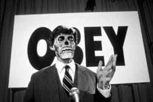
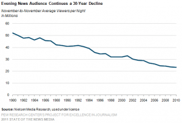
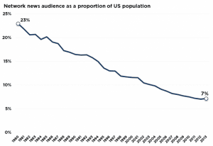
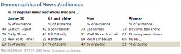
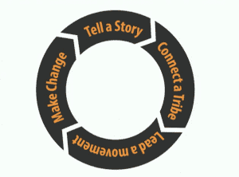

< < < Back
How The Corporate Hivemind Is Losing Control Over Society – Return Of Kings
We have moved from an era of average products for average people to an era of tribes and leaders, as pointed out by marketing flack Seth Godin. This applies to the news industry perhaps more than any other business people interact with on a daily basis. An average saccharin news product for an average viewer is being relegated to the ash heap of history, especially when it comes to what used to be termed “mainstream” but is now more accurately termed “legacy” broadcast and print news.
The mainstream media lost control of the dialogue with the rise of the internet. The internet has brought about a tectonic shift in the way people think, acquire new ideas, and inform themselves. This means the age of the dominance of the talking head is coming to an end as preferences shift from milquetoast lies and half-truths to harsh reality.

They Live (1988) was another film decades ahead of its time, dramatizing the hidden messages in politics and business
In the old days, large corporations were able to push their products—and ideals—on the masses through constant advertising and the gatekeeper model of the news media. Noam Chomsky, even though he is an avowed leftist, accurately describes how this model works in this interview from Manufacturing Consent:
The elite media are the agenda-setting media. That means The New York Times, The Washington Post, the major television channels, and so on. They set the general framework. Local media more or less adapt to their structure.
And they do this in all sorts of ways: by selection of topics, distribution of concerns, emphasis and framing of issues, filtering of information, by bounding of debate within certain limits.
They determine, they select, they shape, they control, they restrict — in order to serve the interests of dominant, elite groups in the society.
However Chomsky, as many leftists do, fails to see how the government also shapes, controls, and restricts in order to serve the interests of the dominant, elite groups in government.
Before the internet, any information presented had to pass through a gatekeeper, or several gatekeepers before it was allowed on the air. If a story did not meet a certain agenda or it upset an advertiser, no matter how important it was it would never be allowed to see the light of day.
This is no longer the case. The rise of the internet means people now gather around web sites as they once would have gathered around the television set to get news, views, and opinions. The web is on their phone, their tablet, their PC. It is an interactive medium rather than a passive one like TV. This means the dominance of the centralized model of communication is ending. The corrupt, legacy media is less trusted now than at any time since Gallup started taking this poll.
Gallup Polls since 1997 have shown that most Americans do not have confidence in the mass media “to report the news fully, accurately, and fairly.” According to Gallup, the American public’s trust in the media has generally declined in the first decade and a half of the 21st century.
People are awakening en masse and they increasingly know are being fed lies. The Internet may yet save America from itself. These are some of the reasons by the legacy media cannibalized itself.
Bias
Media bias, once vehemently denied by the talking heads at the alphabet channels, is now accepted reality. The number of Americans expressing “hardly any” confidence in the press has risen to 45% according to Jonathan Ladd, author of Why Americans Hate the Media and How It Matters.
When attempting to discover why there is bias, one of the keys is looking at the backgrounds and beliefs of people who work as journalists. Here are some fascinating facts about those who work in the media from Discover the Networks, A Guide to the Political Left:
- 81% of news media professionals favor affirmative action in employment and academia.
- Some 71% agree that the government should work to ensure that everyone has a job.
- 75% agree that the government should work to reduce the income gap between rich and poor.
- 56% say that the United States has exploited the nations of the Third World.
- 57% say that America’s disproportionate consumption of the world’s natural resources is immoral.
- Nearly half agree that the very structure of our society causes people to feel alienated.
- Only 30% agree that “private enterprise is fair to workers.”
- In a 2004 Pew Research Center study of journalists and media executives, the ratio of self-identified liberals to conservatives was 4.9 to 1.
- In a 2007 Pew Research Center study of journalists and news executives, the ratio was four liberals for each conservative.
Looking at those stats, it’s easy to see that most of the people who work in the media would fall under the SJW (social justice warrior) classification.
As the corporate media stranglehold on news and information has been ending and the internet arises to fill the vacuum, it has become common for Presidential candidates to attack bias in the media. This tactic was pioneered by Newt Gingrich in his 2008 and 2012 campaigns.
I think the destructive, vicious, negative nature of much of the news media makes it harder to govern this country, harder to attract decent people to run for public office.
Gingrich made this statement in response to CNN’s John King opening a Presidential Debate with a contrived issue about Gingrich’s marital fidelity. You can watch this and other take-downs of the media by Gingrich in this YouTube collage.
More recently, Breitbart did an article on the bias that supposedly conservative Fox News displayed towards Donald Trump at its March 3, 2016 debate.
In their naked pursuit of Donald Trump’s scalp, moderators Chris Wallace, Bret Baier, and Megyn Kelly used every cheap trick in the book. None of the other candidates faced dramatic graphics. Trump did. None of the other candidates faced video of past statements. Trump did. Trump was never asked to attack his rivals. On at least three occasions, Trump’s rivals were invited to attack him.
WALLACE: But it was your video and the serious question is, because the suggestion is, do you think that Donald Trump is naive about the threat that Vladimir Putin represents?
WALLACE: Mr. Trump opposes any increase because he says it will price American workers out of the world market. Is he wrong about that?
WALLACE: Senator Rubio … Please tell Mr. Trump why he’s unprepared to be commander-in- chief.
[Me-gyn] Kelly used leaked reports and unsubstantiated rumors surrounding an off-the-record interview Trump supposedly had with the left-wing New York Times…There is nothing more sacred in journalism than an off-the-record situation. This is supposed to be inviolable.
Fox News even went so far as to air an anti-Trump campaign ad—paid for by John Kasich—during the debate. The marionettes posing as journalists, without a doubt, did this at the behest of their bosses, which brings us to ownership.
Ownership
Six corporations control nearly all of the media. This includes News Corporation, Disney, Comcast, Time Warner, Viacom, and CBS. Pulitzer-prize winning journalist Chris Hedges warns us that corporate media control “of nearly everything we read, watch or hear” is what he calls inverted totalitarianism:
A system where corporations have corrupted and subverted democracy and where economics trumps politics.

This is why everything you hear on TV sounds like everything else you hear on TV, fear and consumption
Princeton political theorist Sheldon Wolin also warns about this power structure in his award-winning book Democracy Incorporated:
[Managed democracy is] a political form in which governments are legitimated by elections that they have learned to control. The electorate is prevented from having a significant impact on policies adopted by the government through the continuous employment of public relations techniques [by the six media corporations.]
Many of these public relations techniques are detailed in a TNMM recommended documentary, The Century of the Self. These techniques have been illustrated for all to see in the 2016 Presidential Campaign, as the corporate-government media establishment has been pulling every dirty trick possible including threatening a brokered convention to keep Donald Trump from getting the nomination, and possibly winning the election.
According to Wolin, these are two important ways in which inverted totalitarianism is the inverted form of classical totalitarianism.
- Whereas in Nazi Germany the state dominated economic actors, in inverted totalitarianism, corporations through political contributions and lobbying, dominate the United States, with the government acting as the servant of large corporations.
- While the Nazi regime aimed at the constant political mobilization of the populace, inverted totalitarianism aims for the mass of the populace to be in a persistent state of political apathy. The only type of political activity expected or desired from the citizenry is voting. Low electoral turnouts are favorably received as an indication that the bulk of the populace has given up hope that the government will ever help them.
Inverted totalitarianism reverses things. It is all politics all of the time but a politics largely untempered by the political. Party squabbles are occasionally on public display, and there is a frantic and continuous politics among factions of the party, interest groups, competing corporate powers, and rival media concerns. And there is, of course, the culminating moment of national elections when the attention of the nation is required to make a choice of personalities rather than a choice between alternatives. What is absent is the political, the commitment to finding where the common good lies amidst the welter of well-financed, highly organized, single-minded interests rabidly seeking governmental favors and overwhelming the practices of representative government and public administration by a sea of cash.
The corrupting influence of money on politics (as predicted by Oswald Spengler 100 years ago) and in the media causes dishonesty. The rise of the Internet has meant for the first time, citizens can easily challenge the narrative and hold those in power accountable.
Dishonesty
Brian Williams, king of nightly news Internet memes
Because of their dishonesty and the power of the internet to hold them accountable, we have witnessed the very public disgrace of two major network anchors in the past decade. Another major cable news anchor is currently embroiled in controversy, too.
Brian Williams repeatedly, and over a 10-year plus period repeated the story that he was aboard a helicopter that was hit and forced down by RPG fire during the Iraq War. It took over 10 years of Williams continuing to repeat this story, burnishing his credentials as a journalist by doing so before his account was finally refuted by crew members who rode the helicopter with him.
Williams, in reality, had a much more uneventful ride arriving an hour after the helicopters in front of him had made emergency landings. The Chinook helicopter he rode took no fire. Williams even told different versions of his story, adding to the doubts:
I looked down the tube of an RPG that had been fired at us and had hit the chopper in front of ours. And I’m so fortunate to be sitting here.
This was in contrast to another version:
Then, I noticed something out the window. From a distance of six miles, I witnessed a rocket launch. A rising trail of smoke, then a second rocket launch, an orange flash and more smoke — as a rocket heads off toward Israel.
He went on to say he “made a mistake recalling” the event. Huh? Williams was also caught up in stories regarding his coverage post-Hurricane Katrina in New Orleans. He blamed these stories on “fog of memory.”
When you look out of your hotel room window in the French Quarter and watch a man float by face down, when you see bodies that you last saw in Banda Aceh, Indonesia and swore to yourself that you would never see in your country. I rode it out with people who later died in the Superdome.
My week, two weeks there was not helped by the fact that I accidentally ingested some of the floodwater. I became very sick with dysentery, our hotel was overrun with gangs, I was rescued in the stairwell of a five-star hotel in New Orleans by a young police officer. We are friends to this day. And uh, it just was uh, I look back at total agony.
These claims also turned out to be false. As Williams signed on as NBC News Anchor in 2004, a colleague of his was caught up in a scandal of his own.
Dan, I think we’d Rather hear from someone else
On Septmber 8, 2004, less than two months before the Presidential Election, Dan Rather reported on 60 Minutes that a series of memos critical of then-candidate for President George W. Bush’s service in the Texas Air National Guard had been discovered in the personal files of Lt. Col. Jerry Killian, Bush’s commanding officer.
The documents were presented as authentic, but since then several typography experts have concluded they were forgeries. Once again, it was the internet that held the news business accountable. Within hours of the story airing, questions arose regarding the authenticity of the documents. The concerns then spread throughout the media. The incident damaged Rather’s credibility, and in 2006 CBS News decided not to renew his contract.
Mr. Family Values has problems of his own
More recently, Fox News’ Bill O’Reilly, Mr. Family Values himself, has become embroiled in domestic abuse allegations and has lost custody of his children. He reportedly choked his wife during a disagreement, and his teenage children decided to stay with their mom. Considering his well-known temper these allegations are believable, in my opinion.
Fluff
Anyone who has watched a television newscast knows the mainstream media has the depth of a glass of water. In her book The Interplay of Influence: News, Advertising, Politics, Kathleen Jamieson illustrates how news stories are made to fit one of the five following categories, all catering to the lowest common denominator:
- Appearance versus reality
- Little guys versus big guys
- Good versus evil
- Efficiency versus inefficiency
- Unique and bizarre events versus ordinary events
Reducing news to these five categories, and tending towards an unrealistic black/white mentality, simplifies the world into easily understood opposites. This way, the media provides an oversimplified skeleton of information which is more easily commercialized.
The rise of the internet means in-depth reporting is at your fingertips, and people do not have to settle for this cookie-cutter, lowest common denominator approach. Citizen journalists often break stories that professional journalists do not or cannot.
People are increasingly leaving this outdated communication model where a big mouth on TV tells you what to think and believe, and finding people who share their view of the world.
Demographics
The decline of the corporate news model has been playing out for quite some time, even before the internet became ubiquitous. The evening news audience has been cut in half in just over a generation.

Declining viewers mean declining revenues and ever-more desperate news operations shilling for attention in a crowded marketplace
The trends are even more telling when one looks at the network news audience as a percentage of the population. The legacy media is, quite literally, bleeding to death.

Even though the population of the U.S. has been increasing since 1980, the news audience has tumbled
Women make up about two-third to three-quarters of the remaining television news audience, depending on the city and survey. This would tend to explain why most of the stories in the legacy media tend to focus on topics of interest to women, and not men. Women also, tellingly make up 60% of the MSNBC audience.

Women make up nearly 2/3 to 3/4 of the television news audience, depending on the city and time of day
Heretics
The future of news will not be decided by those who follow the old rules of yellow journalism and corporate directorships. It will be decided by heretics who look at the status quo, are not satisfied with being another sheep, and decide to bring change to the world, as pointed out by Godin.
Matt Drudge touched on the importance of people becoming unwilling to accept the terms commanded to us by the elite in an interview with Alex Jones in October 2015.
In the beginning they were dismissing the Internet.
That being said, people are willing to be made over in the image of these corporations. The reason there’s so much anger online is a newspaper like the Washington Post will leave a comment section. They don’t care what you’re saying. They don’t care what you’re thinking. That’s why you get this anger, that…I’m operating in their playground.
Make your own playground! The reason I’m here, Alex, is because you’ve made your own playground. This is a figment of your imagination, and the Drudge Report is mine. It is a very simple thesis; you are what you dream you are and become. And, I wish Americans would get out of the sickness and just become greater.
Drudge also touched on why the internet should be alive and controversial in the interests of free speech and overall freedom.
There’s no difference from any of these websites! You go up and down. We talk about this. What’s the difference between the websites? Between a Slate or a Salon, or a Buzzfeed, or a HuffPo? What is the difference! There isn’t any! And, this is a travesty. It’s so much like, it’s almost like a weird conglomerate of groupthink that has developed in a dynamic era that should be vibrating. It should be vibrating. It should be controversial.

Seth Godin says the new communication model looks like this; if you don’t like the status quo form your own tribe or join another tribe and challenge it
The good news is, the end of the era of the gatekeepers of information is presenting a real threat to the global power structure. The corporate, neoliberal, globalist, Socialist hivemind is beginning to lose its grip on American society. And I, for one, say good riddance once and for all!
However, before we celebrate, there is much more work to be done. As Drudge says, there is still way too much plain vanilla corporate-approved SJW, neoliberal, and globalist propaganda flowing around the Internet. Also, realize forces are at work now to eliminate the unfettered freedom of speech we now enjoy on the internet. Persistence, vigilance, and defiance are the prices we must pay to ensure the continued free flow of ideas and information and to make lasting change to society.
The dam broke with the rise of the internet, and the stranglehold on information and ideas got washed away with it. We have more potential to permanently dismantle the machine than we have ever realized before in human history. Let us make good use of it.
Read More: South Korea’s Draft Dodging Female President Tries To Play War Using Male-Only Conscripts